I am a full-time Research Engineer in the NYU Neuroinformatics Lab, working with Prof. Erdem Varol. I recently graduated with an M.S. in Computer Science (Neuroinformatics) from NYU Tandon School of Engineering. I build tools and analyze large-scale neural data spanning brain–computer interfaces (BCIs), Neuropixels electrophysiology, and related multimodal recordings, with collaborators including Prof. Saurabh Vyas and Prof. Attila Losonczy. My research interests center on foundational models for neuroscience and multimodal neural data translation.
Longer term, I want to help build brain implants and neural interfaces that let people control and communicate with AI agents and the Internet as fluidly as imagined in Neuromancer and Cyberpunk 2077—technologies in the spirit of neural lace, direct brain–computer links, and closed-loop neuroprosthetics.
Before joining the lab full-time, I completed my M.S. at NYU Tandon and worked as a Computer Vision Engineer at Bigvision.ai, building end-to-end computer vision systems for retail and e-commerce. I earned a B.E. (Honours) in Electrical Engineering from Jadavpur University, where I published work in medical imaging and computer vision. During my master’s, I also served as a Course Assistant at NYU Stern (Consulting Capstone, Corporate Finance, and Foundations of Corporate Finance, Summer 2025), and developed a CRE loan-financing workflow with multi-LLM agents under Prof. Anthony Marciano.
My research interests are in neuroinformatics: foundational models for neural data, multimodal translation across electrophysiology, imaging, and transcriptomics, representational alignment between the brain and large world models, and tooling for BCIs and Neuropixels-scale recordings.
I currently work on self-supervised pretraining and post-training of foundation models for Neuropixels LFP (geometry-aware SSL, masked prediction, and localization heads for 3D atlas coordinates and brain-region decoding), and on cross-modal cell registration linking in-vivo two-photon imaging, ex-vivo microscopy, and spatial transcriptomics. Some recent representative papers are below; others are on my Google Scholar profile.
|
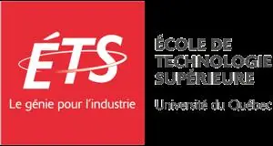 |
|||
|
Research Engineer
NYU Neuroinformatics Lab 2025 - Present |
Computer Vision Engineer
Bigvision.ai 2022 - 2024 |
Mitacs Research Intern
ÉTS Montreal Summer 2021 |
B.E. Electrical Engg.
Jadavpur University 2018 - 2022 |
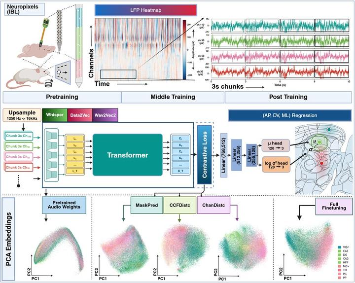
Self-supervised framework that learns geometry-aware representations of single-channel LFP by using probe channel geometry as a supervisory signal. Compares speech SSL objectives (e.g., masked prediction) with geometry-aware losses that mirror physical channel layout; evaluates Wav2Vec 2.0, Whisper, and Data2Vec against supervised baselines across datasets, labs, species, and probe technologies for 3D coordinate regression and brain-region classification.
PDF Under Review
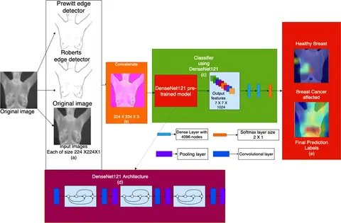
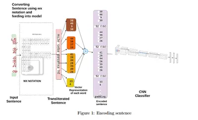
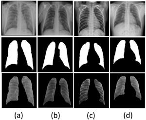
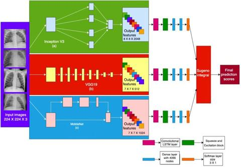
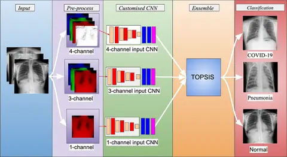
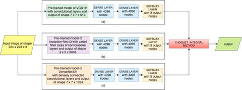
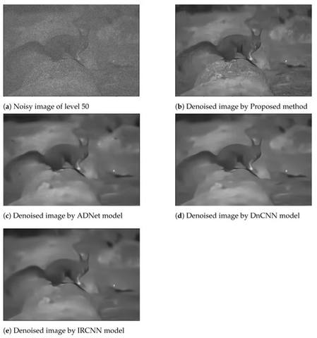
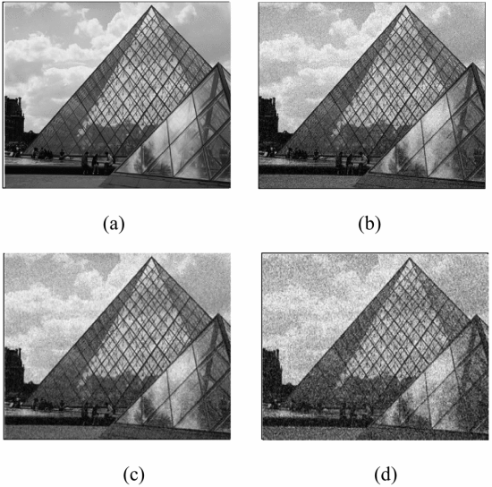
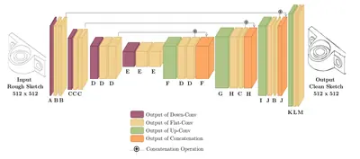